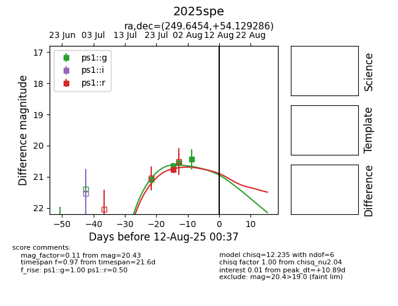

Target 2025spe at 2025-08-12 02:49, see:
YSE: ziggy.ucolick.org/yse/transient_detail/2025spe
alt names
2025spe (yse)
coordinates:
equatorial (ra, dec) = (249.6454,+54.12929)
galactic (l, b) = (82.4739,+40.93192)
photometry
last ps1::g=20.43, ps1::r=20.77
4 ps1::g, 1 ps1::r detections
